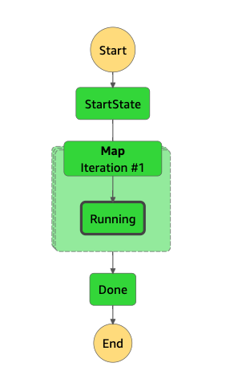

Bosco
Optimising Test Runner Performance through Serverless Computing


Bosco is a feature-based, serverless test runner that identifies whether the components of a chatbot are functional or not, and reports errors if so. It was built using Puppeteer, an automation tool, and Mocha, a testing framework. It is designed using an AWS Step Function state machine, which runs a Lambda function for each test, or if required, an array of tests. It is deployed in a Lambda container using a Docker image and CloudFormation. The latest results are stored in DynamoDB, with CloudWatch logs also being monitored. Screenshots of failed tests are stored in S3, and alerts are sent to Slack to notify developers of any failed tests.

Puppeteer

Bosco was built using Puppeteer, an automation tool that is used for web scraping. It replaced Testcafe, which was resource-heavy and slow.
Learn moreLambda

Bosco will replace Frankenstein, the current test runner, which is run on two EC2 instances. The main issue with Frankenstein was it does not scale and more tests cannot be added to it . Bosco is run via a Step Function state machine. Theoretically, it is infinitely scalable. It is also billed per execution as opposed to Frankenstein, which ran every 20 minutes and was costly.
Learn moreMocha

Mocha was the chosen test framework for Bosco. It gathers all the tests in an array, runs the tests, and reports the results to Cloudwatch. The latest results are stored in DynamoDB. Screenshots are taken of failed tests and stored in S3.
Learn more